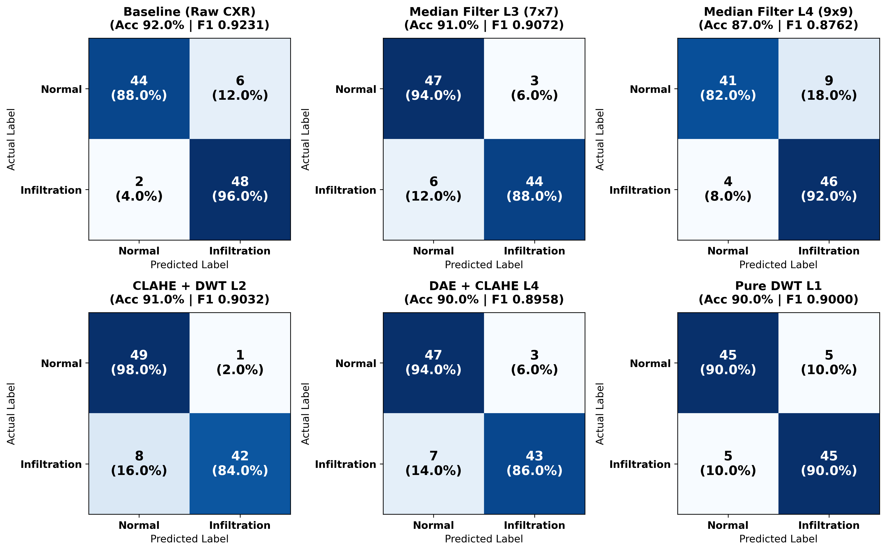

การทดลองที่ 1: ภาพต้นฉบับ 21 สภาวะ (6 กลุ่ม)
ฝึก ResNet-50 แยกกัน 1 โมเดล/สภาวะ (Adam $\text{LR}=10^{-4}$, 7 Epochs):
(1) Baseline | (2) Median Filter $3\times3, 5\times5, 7\times7, 9\times9$ (L1–L4)
(3) CLAHE+DWT db1 (L1–L4) | (4) DAE+CLAHE (L1–L4)
(5) Pure DWT db1 (L1–L4) | (6) DWT Band (Low, Mid, High Only, Selective)
การทดลองที่ 2: จำลอง Noise 16 สภาวะ × 12 วิธี
16 สภาวะ (1 Clean + 5 ตระกูล × N1, N2, N3):
• Gaussian ($\sigma=0.02, 0.05, 0.10$) • Poisson ($\text{Peak}=500, 100, 30$)
• Poisson–Gaussian • Salt & Pepper ($0.5\%, 2\%, 5\%$) • Speckle ($\sigma=0.05, 0.10, 0.20$)
12 วิธีลด Noise & Fusion (AdamW, Early Stopping, Youden's J):
• baseline, median_L1..L3, clahe_dwt_L1..L3, dae_clahe_L1..L3 (1 View)
• dwt_L1_L4_fusion (5 Views) และ dft_low_mid_high_fusion (3 Views)

| สภาวะตัวแทน (การทดลองที่ 1) | NIH Acc | NIH F1 | NIH AUC | VinBig Acc | VinBig F1 | VinBig AUC |
|---|---|---|---|---|---|---|
| Baseline (Raw CXR) | 0.5700 | 0.6815 | 0.5932 | 0.9200 | 0.9231 | 0.9676 |
| Median Filter L3 (7×7) | 0.5900 | 0.7007 | 0.5704 | 0.9100 | 0.9072 | 0.9680 |
| Median Filter L4 (9×9) [Over-smooth] | 0.5700 ↓ | 0.6767 ↓ | 0.5880 | 0.8700 ↓ | 0.8762 ↓ | 0.9528 ↓ |
| CLAHE + DWT L1 | 0.5900 | 0.7050 | 0.5084 | 0.8700 | 0.8713 | 0.9512 |
| Pure DWT L1 | 0.5700 | 0.6614 | 0.6616 | 0.9000 | 0.9000 | 0.9560 |
| DWT Single Band (Low/Mid/High) | 0.52–0.57 | 0.56–0.65 | 0.52–0.59 | 0.78–0.85 ↓ | 0.74–0.85 ↓ | 0.88–0.93 ↓ |
1. ภาวะ Over-smoothing ที่ระดับ L4: เมื่อเพิ่ม Median Filter จาก L3 ($7\times7$) เป็น L4 ($9\times9$) ความแม่นยำลดลงทั้งบน NIH (59%→57%) และ VinBigData (91%→87%)
2. การแยกย่านความถี่เดี่ยว: ทำให้ Accuracy บน VinBigData ลดลงเหลือ 78–85% เป็นเหตุผลสำคัญให้พัฒนา Multi-view Frequency Fusion ในการทดลองที่ 2


| ชุดข้อมูล | อันดับ | วิธี (Condition) | Views | ROC-AUC | PR-AUC | Accuracy | Recall | Spec. |
|---|---|---|---|---|---|---|---|---|
| NIH | 1 | dae_clahe_strength_L2 | 1 | 0.6711 | 0.6920 | 62.13% | 63.38% | 60.88% |
| NIH | 2 | dae_clahe_strength_L3 | 1 | 0.6705 | 0.6695 | 60.81% | 49.00% | 72.63% |
| NIH | 4 | dft_low_mid_high_fusion | 3 | 0.6401 | 0.6726 | 57.44% | 58.50% | 56.38% |
| NIH | 5 | baseline (ไม่ลด Noise) | 1 | 0.6367 | 0.6698 | 57.44% | 66.25% | 48.63% |
| VinBig | 1 | dft_low_mid_high_fusion | 3 | 0.9991 | 0.9991 | 97.81% | 98.38% | 97.25% |
| VinBig | 2 (1-View #1) | dae_clahe_strength_L2 | 1 | 0.9970 | 0.9972 | 96.50% | 97.50% | 95.50% |
| VinBig | 3 | median_L3 (7×7) | 1 | 0.9970 | 0.9972 | 95.69% | 97.13% | 94.25% |
| VinBig | 4 | baseline (ไม่ลด Noise) | 1 | 0.9967 | 0.9970 | 95.38% | 93.50% | 97.25% |
| VinBig | 12 | dwt_L1_L4_fusion | 5 | 0.9785 | 0.9821 | 91.19% | 88.63% | 93.75% |
DAE → CLAHE L2 ชนะเลิศอันดับ 1 ในกลุ่มภาพเดี่ยว (NIH Acc +4.69%, Spec 48.63%→60.88%; VinBigData Recall 93.50%→97.50%) และ DFT Fusion (3 Views) ได้อันดับ 1 โดยรวมบน VinBigData (Acc 97.81%)